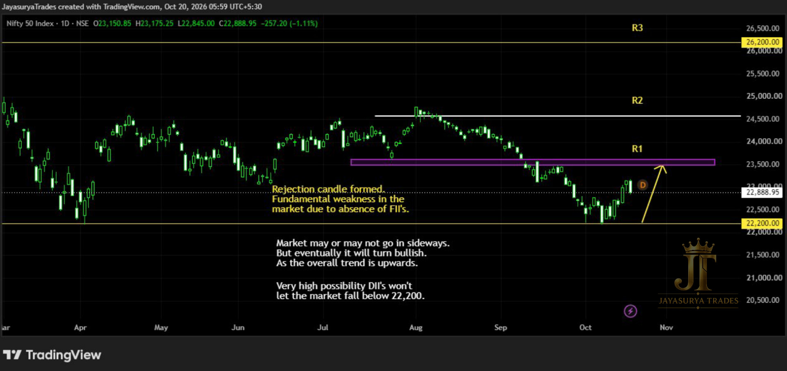

For this Tuesday Market Focus, I am looking at NIFTY 50. The market has recently made a bullish move, in line with the scenario discussed in my previous analysis. When market participants were concerned about a possible fall, I highlighted 22,200 as an important level that could be difficult for the market to break below.
My earlier view was that the absence of strong FII participation was one source of weakness, while DII participation could help support the market around 22,200. I also explained that the market could move sideways for a period, but the broader trend remained upward and a bullish move could eventually develop. Price has since moved upward from that area, broadly following the scenario I had outlined. This is how a planned scenario should be assessed: against actual price behaviour, without treating any level or outcome as guaranteed.
Recent development: Bullish move following the reaction around 22,200
Key support area discussed earlier: 22,200
Immediate resistance: Chart-marked R1
Next resistance levels: Chart-marked R2, followed by R3 at the all-time high marked on the chart
Current bias: Bullish, while the broader upward structure remains intact
Approach: Focus on potential buy setups and wait for suitable confirmation

Market Structure — Bullish Move After 22,200 Held
The recent upward move is consistent with the bullish scenario I discussed earlier. My view was that 22,200 could act as an important support area, with domestic institutional participation potentially helping to limit downside pressure even while FII participation remained a concern.
I also said that sideways movement was possible before the market moved upward. The recent price action has followed that broad scenario. However, past price behaviour does not guarantee that the market will continue in the same direction. The bullish view remains a market scenario to monitor as price approaches the resistance levels marked on the chart.
Key Levels to Monitor
The chart-marked resistance levels are the main upside decision points in today's analysis. I am watching how price behaves around R1 first, then R2 if R1 is broken, and R3 if price also moves above R2. R3 is the all-time high marked on the chart. The numerical values of these resistance levels are not stated in the written analysis, so refer to the attached chart for their exact positions.
Bullish Scenario — R1, R2 and R3
The market is currently showing a bullish bias in this analysis. If price breaks above R1, the next chart-marked resistance to watch is R2. If price also breaks above R2, R3 — the all-time high marked on the chart — becomes the next resistance area to monitor.
These are conditional scenarios, not guaranteed targets. Watch how price behaves at each level and use your own confirmation rules before making a trading decision. A resistance break should not be assumed before it happens.
For Investors — Be Selective
From the broader market perspective, the upward trend may offer investors an opportunity to research selected NIFTY 50 stocks. This is not a recommendation to buy every stock or an assumption that all stocks will rise together. Individual stocks can behave differently from the index.
Carry out your own fundamental analysis, consider your investment horizon and risk tolerance, and consult a qualified financial adviser if needed. Choose specific companies that suit your own circumstances rather than making an investment decision based only on the direction of NIFTY 50.
For Intraday Traders and Scalpers — Focus on Buy Setups
While the broader market structure remains bullish, my focus is on potential buy setups rather than looking for sell entries against the trend. Traders can monitor lower time frames such as 15-minute or 5-minute charts, or use the time frame that fits their trading period and setup.
A bullish overall trend does not make every buy entry high probability, and it does not guarantee that price will reach a take-profit level. Wait for your own setup and confirmation, define risk before entering, and manage the trade according to your plan. Avoid entering simply because the market has already moved upward.
Key Takeaways
- NIFTY 50 has recently made a bullish move, broadly following the scenario discussed in the previous analysis.
- 22,200 was the key support area highlighted earlier in the analysis.
- The current bias remains bullish while the broader upward structure holds, but continuation is not guaranteed.
- R1 is the immediate resistance to monitor; if price breaks it, R2 becomes the next level to watch.
- If price also breaks above R2, R3 — the chart-marked all-time high — becomes the next resistance area.
- Investors should research selected NIFTY 50 stocks individually rather than assume every stock will rise.
- Intraday traders and scalpers can focus on potential buy setups on suitable lower time frames, with confirmation and risk management.
My focus for NIFTY 50 is the continuation of the current bullish structure and the way price reacts around R1, R2 and R3. The market may continue upward if resistance levels are broken, but each step needs to be assessed from actual price behaviour. The 22,200 area remains the important support reference from the previous analysis.
R1 is the immediate resistance to watch.
R2 is the next level if R1 breaks.
R3 is the chart-marked all-time high and the next resistance if R2 breaks.
One day. One market. One focused analysis.
Levels. Structure. Scenarios. Confirmation.
No hype. Just how the market behaves.
Watch. Wait. Confirm.
Risk Disclaimer
This analysis is provided for educational and informational purposes only and
should not be considered financial advice or a recommendation to buy or sell
any financial instrument.
Trading involves substantial risk. Always conduct your own research and follow
your own trading plan and risk-management rules.